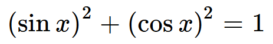
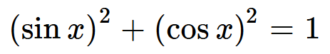

Рациональные выражения —
это выражение, в состав которого включены числа, переменные, арифметические действия и операции возведения в степень.
Выделяют два вида рациональных выражений:
Примеры решений целых рациональных уравнений:
Пример решения дробно-рационального уравнения:
Выделяют два вида рациональных выражений:
- Целые выражения. Состоят из чисел и переменных, содержат действия сложения, вычитания, умножения и деления на число, отличное от нуля. Целое выражение имеет смысл при любых значениях входящих в него переменных.
- Дробные выражения. Помимо действий сложения, вычитания, умножения и деления на число, отличное от нуля, содержат деление на выражение с переменными. Дробное выражение при некоторых значениях переменной может не иметь смысла. Значения переменных, при которых выражение имеет смысл, называют допустимыми значениями.
Примеры решений целых рациональных уравнений:
-
x2 - 6x + 9 = 0
Это квадратное уравнение, которое можно решить тремя способами. Давайте рассмотрим каждый!
-
С помощью дискриминанта:
D = b2 - 4ac
В данном случае a = 1, b = -6, а c = 9. Поэтому:
D = (-6)2 - 4 * 1 * 9 = 36 - 36 = 0
ВАЖНО! Если D > 0, то у нас два корня, если D = 0, то один корень, если D < 0, то корней нет.
Дискриминант равен 0, следовательно, будет только один корень. Давайте его найдём. Для этого воспользуемся специальной формулой:
x1,2 =
x = 6/2 = 3 (это искомый корень) -
С помощью теоремы Виета(этой теоремой можно пользоваться только в случае приведённых уравнений. Это такие уравнений, в которых a = 1):
Многие её не любят, но на самом деле она очень простая. Сейчас докажу!
x1 + x2 = -b
x1 * x2 = c
Давайте воспользуемся ей на нашем примере.
x2 - 6x + 9 = 0
x1 + x2 = 6
x1 * x2 = 9
Отсюда можно понять, что x = 3 -
С помощью ФСУ:
(x - y)2 = x2 - 2xy + y2
x2 - 6x + 9 = 0
(x - 3)2 = 0
x = 3
-
С помощью дискриминанта:
-
x + 5/4 = x - 9/6
Домножим левую часть на 3, а правую на 2. Получаем:
3*(x + 5)/12 = 2*(x - 9)/12
3x + 15 = 2x - 18
3x - 2x = -15 - 18
x = -33
Пример решения дробно-рационального уравнения:
-
x/(x - 2) + 5/x = 4
Появляется ограничение, иначе ОДЗ(область допустимых значений):
Знаменатель не может быть равен 0, следовательно
x ≠ 0; x ≠ 2
Дальше продолжаем решать наше уравнение. Переносим 4 влево и преобразовываем уравнение.
x2 + 5*(x - 2) - 4x*(x - 2) /x*(x-2) = 0
x2 + 5x - 10 - 4x2 + 8x / x*(x-2) = 0
-3x2 + 13x - 10 / x*(x-2) = 0
Теперь приравняем числитель и знаменатель к нулю и решим два уравнения.
Корни числителя:
-3x2 + 13x - 10 = 0
D = b2 - 4ac = 169 - 4 * (-3) * (-10) = 49
x1,2 = -13 +- 7/2 * (-3)
x1 = 13 + 7/6 = 20/6 = 10/3
x2 = 13 - 7/6 = 1
Иррациональные выражения — это выражения, в которых присутствуют корни.
Иррациональные уравнения — это уравнения, содержащие неизвестный корень, находящийся под корнем. Всего существует 5 видов иррациональных уравнений. Давайте рассмотрим каждый:
Иррациональные уравнения — это уравнения, содержащие неизвестный корень, находящийся под корнем. Всего существует 5 видов иррациональных уравнений. Давайте рассмотрим каждый:
-
ПЕРВЫЙ ВИД:
\( \sqrt[]{f(x)} \) = a
Для решения мы записываем ОДЗ и возводим обе части в квадрат:
Пример:
\( \sqrt[]{3x - 1} \) = 2
ОДЗ: x ≥ 1/3
3x - 1 = 22
3x - 1 = 4
3x = 5
x = 5/3 -
ВТОРОЙ ВИД:
\( \sqrt[]{f(x)} \) = \( \sqrt[]{g(x)} \)
Когда с обеих сторон стоит квадратный корень, алгоритм будет такой же:
Пример:
\( \sqrt[]{5x - 1} \) = \( \sqrt[]{3x + 19} \)
ОДЗ: x ≥ 0,2; x ≥ -19/3
Отсюда получается x ≥ 0,2.
5x - 1 = 3x + 19
2x = 20
x = 10 -
ТРЕТИЙ ВИД:
\( \sqrt[]{f(x)} \) = g(x)
Решение:
Пример:
ОДЗ: x ≥ -3
x2 - 3x = (x + 3)2
x2 - 3x = x2 + 6x + 9
-9x = 9
x = -1
-
ЧЕТВЁРТЫЙ ВИД:
\( \sqrt[]{f(x)} \) + \( \sqrt[]{g(x)} \) = a
Решение:
Пример:
\( \sqrt[]{x + 13} \) - \( \sqrt[]{x + 1} \) = 2
ОДЗ: x ≥ -1
(\( \sqrt[]{x + 13} \) - \( \sqrt[]{x + 1} \))2 = 4
x + 13 - 2 * \( \sqrt[]{x + 13} \) * \( \sqrt[]{x + 1} \) + x + 1 = 4
2x + 10 = 2\( \sqrt[]{(x + 13) * (x + 1)} \)
Разделим на 2:
x + 5 = \( \sqrt[]{(x + 13) * (x + 1)} \)
(x + 5)2 = (x + 13) * (x + 1)
x2 + 10x + 25 = x2 + x + 13x + 13
-4x = -12
x = 3
Для начала надо подучить формулы!)
Думаю с основным тригонометрическим тождеством вы уже знакомы, но напомню!

Из него также вытекает два следующих уравнения:

Также для решения тригонометрических уравнений нам понадобится следующее:
ФОРМУЛЫ ПРИВЕДЕНИЯ
Чтобы эти огромные таблицы не пришлось заучивать, давайте расскажу об алгоритме, и для понимания рассмотрим пример.
Все данные формулы помогут тебе решить не только задания из первой части, но и из второй. Давайте решим оба варианта!
1. УРАВНЕНИЕ ИЗ ПЕРВОЙ ЧАСТИ
2. УРАВНЕНИЕ ИЗ ВТОРОЙ ЧАСТИ
Думаю с основным тригонометрическим тождеством вы уже знакомы, но напомню!

Из него также вытекает два следующих уравнения:
Также для решения тригонометрических уравнений нам понадобится следующее:
ФОРМУЛЫ ПРИВЕДЕНИЯ
Чтобы эти огромные таблицы не пришлось заучивать, давайте расскажу об алгоритме, и для понимания рассмотрим пример.
- Например, нам дано sin(2π + x).
- Представим тригонометрический круг. Если число находится на оси косинуса, то функция не меняется на противоположную, если на оси косинуса, то меняется. В нашем случае, 2π лежит на оси косинуса, значит синус остаётся.
- Дальше смотрим на аргумент и число, находящееся внутри функции. В нашем случае это 2π + x. Если мы прибавляем x, то мы двигаемся против часовой стрелки, если вычитаем — против. 2π находится справа, прибавляем x, поэтому мы оказываемся в 1 четверти. Если бы мы вычитали, то мы бы оказались во второй.
- На данном этапе мы ориентируемся на изначальную функцию, то есть, если бы функция поменялась на косинус, мы бы всё равно использовали сейчас синус. И теперь мы проверяем, какой знак у функции в той четверти, которую мы получили в предыдущем этапе. У нас синус и 1 четверть. Синус в первой четверти положительный. Так мы и получаем ответ:
Все данные формулы помогут тебе решить не только задания из первой части, но и из второй. Давайте решим оба варианта!
1. УРАВНЕНИЕ ИЗ ПЕРВОЙ ЧАСТИ
2. УРАВНЕНИЕ ИЗ ВТОРОЙ ЧАСТИ
ПОКАЗАТЕЛЬНЫЕ УРАВНЕНИЯ
Вы уже знаете свойства степеней, поэтому в силах решать показательные уравнения. Всего их 4 вида. Такие уравнения могут встретиться как в первой, так и во второй части.
1. ПРОСТЕЙШИЕ
Для решения этого вида нужно просто привести к одинаковому основанию обе части.
2. ВЫНЕСЕНИЕ ОБЩЕГО МНОЖИТЕЛЯ
Нужно разложить выражения, используя свойства степеней, и вынести общий множитель.
3. СВОДЯЩИЕСЯ К КВАДРАТНЫМ
Вводим новую переменную, то есть используем замену.
4. ОДНОРОДНЫЕ
Для решения нужно поделить уравнение на определенное степенное выражение, чтобы получить квадратное.
ЛОГАРИФМИЧЕСКИЕ УРАВНЕНИЯ
Также есть несколько видов, каждый из которых мы сейчас разберем.
1. ПРОСТЕЙШИЕ
Они решаются с помощью определения логарифмов.
5x - 1 = 4
5x = 5
x = 1
*** В таком уравнении можно опустить ОДЗ и просто сделать проверку корня(-ей).
2. ПОТЕНЦИРОВАНИЕ
Означает переход он равенства, содержащего логарифмы, к равенству, не содержащему логарифмы.
\( \log_2(3x-6) \) = \( \log_2(2x-3) \)
ОДЗ: x > 2
3x - 6 = 2x - 3
x = 3
3. ПРИВЕДЕНИЕ К ОДНОМУ ОСНОВАНИЮ
В подобных уравнениях нужно воспользоваться свойствам логарифмов.
\( \log_2 x \) + \( \log_x 2 \) = 2
ОДЗ: x>0; x≠1
Замена: \( \log_2 x \) = y

y2 + 1 = 2y
y2 - 2y + 1 = 0
(y - 1)2 = 0
y = 1
Обратная замена:
\( \log_2 x \) = 1
x = 2
4. ЛОГАРИФМИРОВАНИЕ
Обе части равенства можно прологарифмировать по одному основанию. Этот метод является "обратным" методу потенцирования.
5.ФУНКЦИОНАЛЬНО-ГРАФИЧЕСКИЙ МЕТОД
Суть метода понятна из названия, мы должны построить в одной системе координат графики функций, записанные справа и слева в уравнении, и найти абсциссы точек пересечения этих функций.
\( \log_2 x \) = 3 - x
x = 2 - искомый корень.
Вы уже знаете свойства степеней, поэтому в силах решать показательные уравнения. Всего их 4 вида. Такие уравнения могут встретиться как в первой, так и во второй части.
1. ПРОСТЕЙШИЕ
Для решения этого вида нужно просто привести к одинаковому основанию обе части.
2. ВЫНЕСЕНИЕ ОБЩЕГО МНОЖИТЕЛЯ
Нужно разложить выражения, используя свойства степеней, и вынести общий множитель.
3. СВОДЯЩИЕСЯ К КВАДРАТНЫМ
Вводим новую переменную, то есть используем замену.
4. ОДНОРОДНЫЕ
Для решения нужно поделить уравнение на определенное степенное выражение, чтобы получить квадратное.
ЛОГАРИФМИЧЕСКИЕ УРАВНЕНИЯ
Также есть несколько видов, каждый из которых мы сейчас разберем.
1. ПРОСТЕЙШИЕ
Они решаются с помощью определения логарифмов.
5x - 1 = 4
5x = 5
x = 1
*** В таком уравнении можно опустить ОДЗ и просто сделать проверку корня(-ей).
2. ПОТЕНЦИРОВАНИЕ
Означает переход он равенства, содержащего логарифмы, к равенству, не содержащему логарифмы.
\( \log_2(3x-6) \) = \( \log_2(2x-3) \)
ОДЗ: x > 2
3x - 6 = 2x - 3
x = 3
3. ПРИВЕДЕНИЕ К ОДНОМУ ОСНОВАНИЮ
В подобных уравнениях нужно воспользоваться свойствам логарифмов.
\( \log_2 x \) + \( \log_x 2 \) = 2
ОДЗ: x>0; x≠1
Замена: \( \log_2 x \) = y
y2 + 1 = 2y
y2 - 2y + 1 = 0
(y - 1)2 = 0
y = 1
Обратная замена:
\( \log_2 x \) = 1
x = 2
4. ЛОГАРИФМИРОВАНИЕ
Обе части равенства можно прологарифмировать по одному основанию. Этот метод является "обратным" методу потенцирования.
5.ФУНКЦИОНАЛЬНО-ГРАФИЧЕСКИЙ МЕТОД
Суть метода понятна из названия, мы должны построить в одной системе координат графики функций, записанные справа и слева в уравнении, и найти абсциссы точек пересечения этих функций.
\( \log_2 x \) = 3 - x
x = 2 - искомый корень.
Вы уже знакомы с целыми и дробно-рациональными уравнениями. Неравенства отличаются только знаком, который стоит в выражении.
Наиболее удобным способом решения неравенств будет метод интервалов. Именно с ним и будем решать практически все неравенства.
!!!ЗАПОМНИ!!!
Вот пример такого случая:
Теперь давайте рассмотрим примеры таких неравенств.
1. ЛИНЕЙНЫЕ
2. ДРОБНЫЕ
- Привести неравенство к виду f(x)>0; f(x)<0. Справа должен быть 0.
- Решить уравнение f(x)=0. (При решении оформляем так: пишем "Корни:" и дальше решаем уравнение)
- Рисуем ось абсцисс(ось Х). На ней обозначаем все корни. Если неравенство строгое, то точки выколотые, иначе - закрашенные. Выколотые точки не входят в ответ.
- Определяем знаки на интервалах: Например, есть интервал от 0 до 4. Возьмем 1 и подставим в уравнение. Если значение уравнения отрицательное, ставим "-", положительное - "+".
- Дальше, переходя из одного интервала на другой, чередуем знаки. (Есть особые случаи, когда мы знак менять не будем. Такой пример разберем ниже.)
- Исходя из того, что нужно было найти, записываем ответ.
!!!ЗАПОМНИ!!!
Если корень находится в четной степени, переходя на другой интервал через него, знак не меняется.
Вот пример такого случая:
Теперь давайте рассмотрим примеры таких неравенств.
1. ЛИНЕЙНЫЕ
-
3x + 20 < 5x + 6
-2x < 14 | :(-2)
***при делении на отрицательное число знак неравенства меняется на противоположный
x > 7
Ответ: (7;+∞) -
x2 > 9
x2 - 9 > 0
(x - 3)(x + 3) > 0Запускаем метод интервалов!
Корни: x=3; x=-3

Ответ: (-∞;-3);(3;+∞)
2. ДРОБНЫЕ